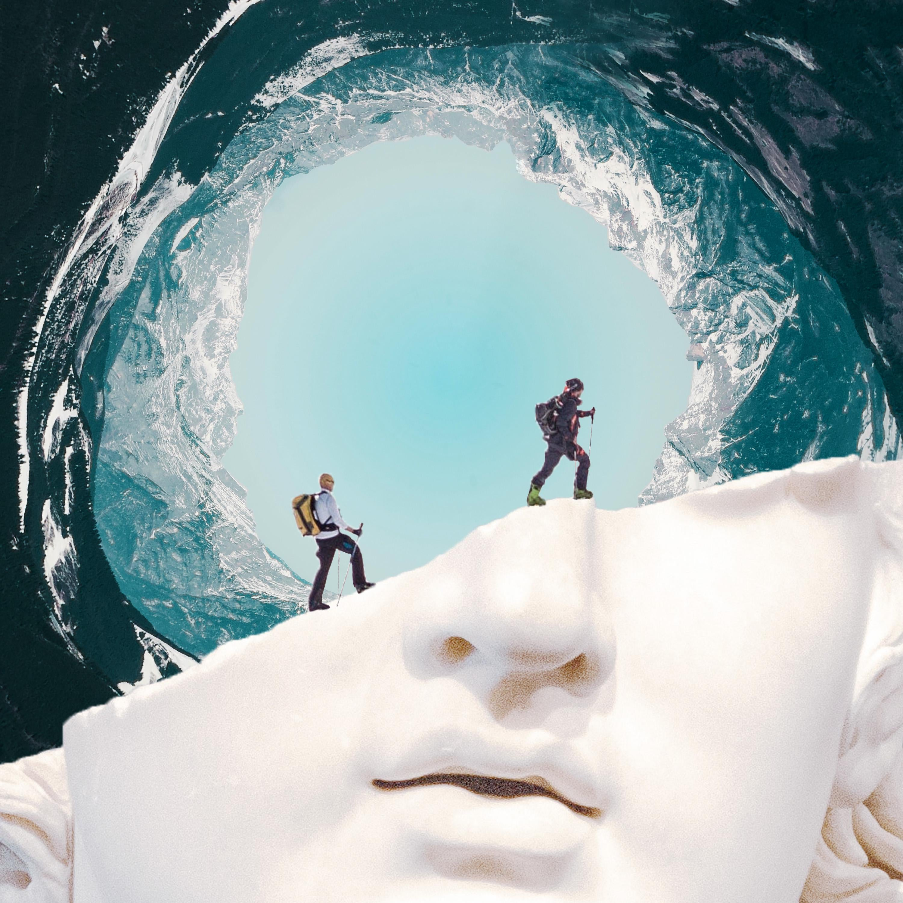
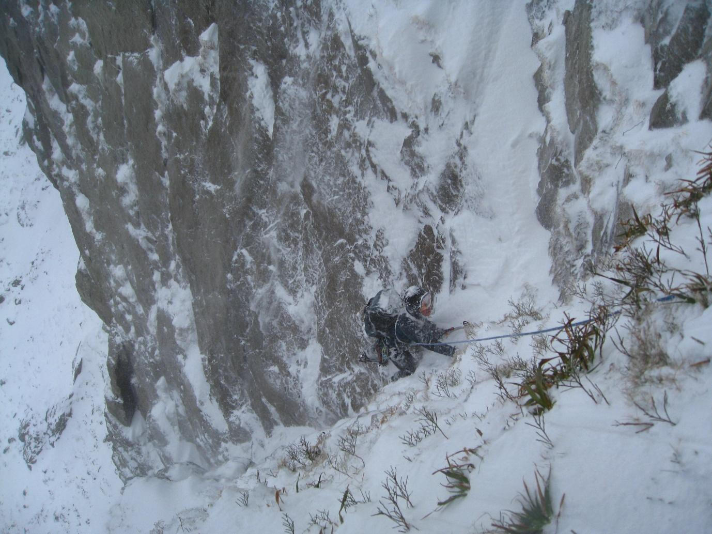
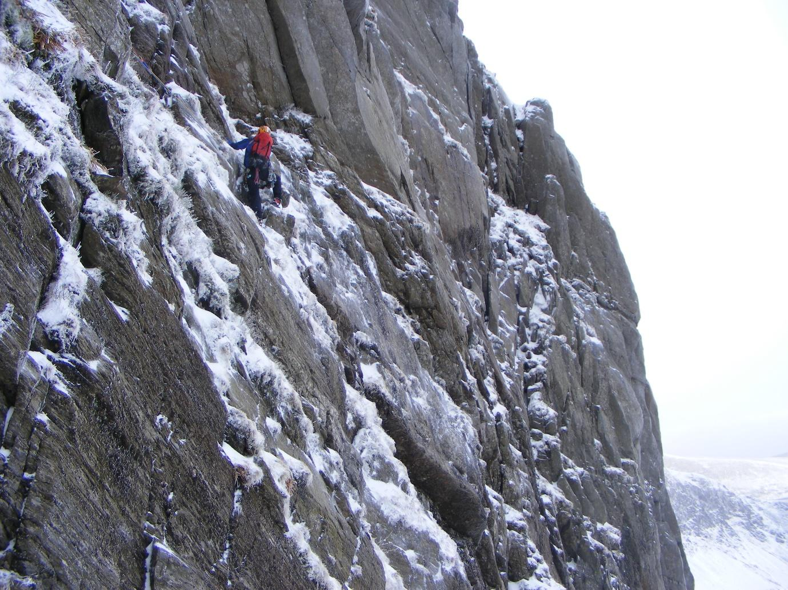
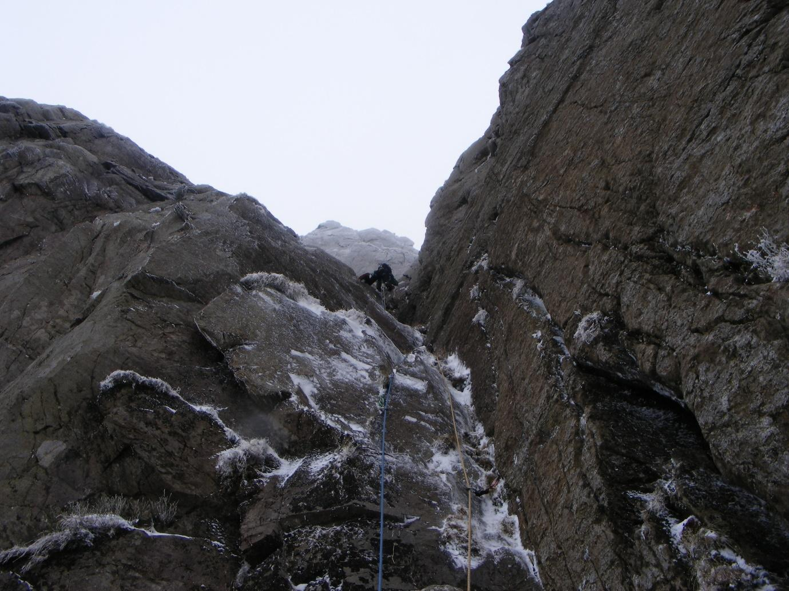
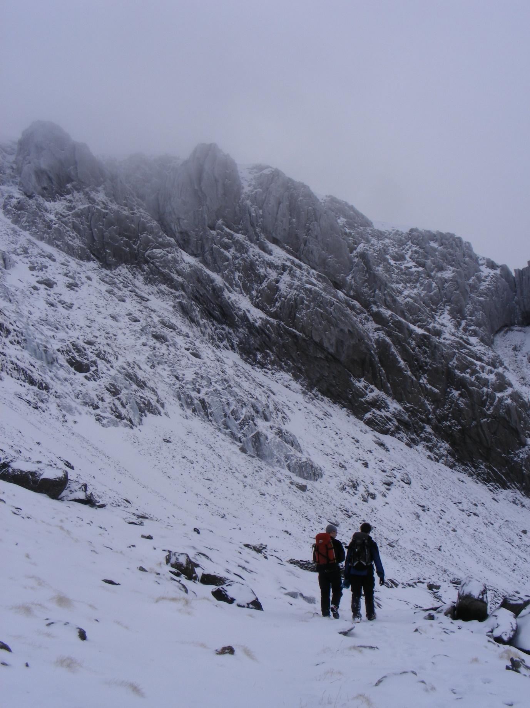
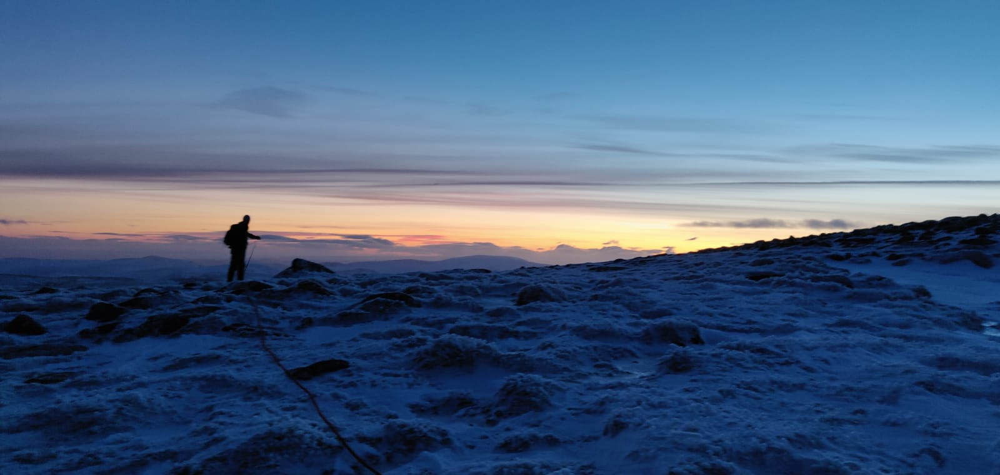

It is with some pride that I write this, the final piece in this project. Conscious Contours has over time metamorphosed into a whole different beast since first conceived. Akin to the way in which I can remember vividly those climbing routes that were far more challenging than first imagined, this project has been immeasurably more work than I expected. However, it has also been far more satisfying for that fact.
It does strike me that outdoor pursuits may seem trivial when we are faced with the global pandemic that is Covid-19. However, the advice is simple: stay indoors with a good online outdoor zine at your fingertips. If, like me, you’ve already plumbed the depths of YouTube and Instagram, hopefully this will offer another space and maybe even a new perspective. In this respect, I am grateful that lockdown has happened, it has reignited my love of reading and writing – something I thought I had left behind with my A-levels. The lockdown has also brought about the tagline for this project, which is an excerpt from a Buddhist sutra: Interaction brings involvement, otherwise each keeps its own. I hope you enjoy perusing these articles and that they may inspire you in some way.
The plan for Conscious Contours will be four editions one for each season. This edition is based around winter. The next will of course be spring! If you have something to contribute, please contact me: contributors@consciouscontours.com
While winter climbing earlier this year, I found myself being overtaken by fear. Unlike in my previous sport climbs, there was no simple down climb this time. The Elvis legs threatened, my hand grip tightened, my indecision grew. Yet, the panic never took over. Drawing from some ethereal reserve, I was able to take control of and momentarily transcend my fear. While there’s little doubt my inexperience wildly inflated my perception of the risk, the effects of panic would still have been very real. Overcoming my fear felt like a decisive and transformational moment, which has led me to reflect on the value of embracing fear.
For much of my life, I’ve been shy and self-conscious, perhaps partially explaining the inhibition-suppressing appeal of alcohol. When asked for my preference in a group situation, you might hear me say, “Oh, I don’t mind, whatever you want.” Though sometimes cute, this delegation of the decision reflected my unwillingness to take responsibility – a form of passive decision-making. I avoided unfamiliar situations due to the inherent uncertainty or perceived risk, hesitating or delegating until a decision was made for me. However, the more I avoided challenging myself and confronting my fears, the more engrained the underlying belief that I couldn’t confront my fears became.
Yet, as fear began to capture me in that isolated Scottish gully, I found that my relationship to fear had subtly transformed. Reflecting on this pattern now, two experiences stand as milestones in this transformational process.
The first experience came during my cycle tour around South Korea. Leaving central Seoul in the late evening, I had cycled through the night following the Hangang, happy to continue cycling rather than camp. As I turned away from the Hangang to head east up a tributary river, the day’s first light washed over the hills, flooding me with a sense of euphoria. I wanted to embrace the sun, fist punch the sky, cry, laugh and sing. My body felt weightless, my movement effortless, as I floated along beside the river.
All my anxieties and self-doubts about touring alone in an unfamiliar country far from my habitual comforts receded with the retreating darkness. The river wasn’t a beautiful location, but that didn’t matter. I had no purpose other than to move forward one pedal after another. For the rest of that morning, I cycled with the sensation that every element in my universe was perfectly aligned. This moment was temporarily forgotten by the following week, as I struggled against monsoon rains, humidity and dehydration. Nevertheless, it had existed and even now I can reach into that memory to draw resolve in unfamiliar situations.
One significant realisation I took from that sensation was that, for most decisions, the particular outcome matters less than the act of committing to a decision. Perhaps it’s that the voluntary aspect of decision-making ensures responsibility and demonstrates agency. All the same, having chanced on this realisation, I found myself increasingly willing to embrace unfamiliar and uncomfortable situations in other areas of my life.
My second transformational experience came while cycling through the Pamirs in late October two years later. I’d partnered with Pritam, another cycle tourist a week earlier, and – as a severe snowstorm had already passed through the region – we’d chosen to take a shorter, but more remote route through Gorno-Badakhshan Autonomous Region in eastern Tajikistan. Leaving the M41 (the Pamir Highway) at Rushan, we cycled into the Bartang Valley aiming for Kök Jar, a 3,807m pass that would take us onto a plateau and across to Karakul close to the border with Kyrgyzstan. However, as we reached Savnob, the penultimate village before Kök Jar, a second snowstorm enveloped us.
Arriving in the dark, wet and cold, and in manic spirits, the situation felt desperate. Though only 130km from Karakul, we had no idea how many days it would take us to cross the plateau. Daylight was less than eight hours and temperatures after sundown were double-digits below zero. No one could offer first-hand information concerning the snow condition beyond the last village, although everyone speculatively told us that the pass was already closed by snow. We had no idea when another snowstorm would hit and, for a little added spice, I came across two wolves while heading to the toilet during the night. Pinned down in a single room for three days, with our host insisting that our only way over the plateau was for his friend to drive us in a 4x4 vehicle for $300, the situation felt intense.
The uncertainty of the situation permeated every aspect of my thinking. I had made substantial compromises during the previous four months of travel to cycle through the Pamirs. Yet, everything now felt so precarious. As the days idled by, the responsibility for the decision seemed to balloon. Eventually, as the skies cleared, we committed to crossing the plateau.
As I’ve reflected on these experiences, I see that they’ve nurtured my willingness to assume risk and endure hardship – something that I am privileged to rarely experience in daily life – transforming the narrative that I maintain about myself. In doing so, my sense of responsibility and psychological resilience has increased, and sensitivity to social anxieties and stress in daily life have reduced.
We each maintain a narrative about ourselves. This narrative is essential to our well-being. It is the well pool from which we give form to our existence. In its better moments, it offers coherence and direction. Though, in its less generous moments, it is excessively rigid and restricts what we believe we are capable of. We struggle to adapt to unfamiliar and uncomfortable situations.
If we don’t challenge ourselves, stretch the boundaries of our potential, our narratives can stagnate and solidify, becoming captured in self-reinforcing beliefs. For example, I found myself believing that I couldn’t speak a second language. Consequently, people responded poorly to my half-hearted attempts, reinforcing my belief and dissuading me from trying harder. In contrast, a propensity to embrace fear nurtures an ability to exist amid uncertainty and self-doubt without hiding behind comfortable patterns of behaviour – instilling an ability to live with and accept the fundamental essence of insecurity.
However, some cautionary reflections are necessary. First, there is the risk that the process of self-transformation can become an obsession or be commodified, in which case we lose our control over the process. Second, confronting fear needn’t involve danger. While overcoming greater uncertainty or risk appears to be associated with more radical transformation, I’m slowly learning to value the process of becoming over the state of being and have gained a greater appreciation for incremental over wholesale change. Finally, managing fear doesn’t mean defeating fear, it means embracing fear, which could involve retreating from a situation while retaining control.
After successfully crossing the plateau to reach Karakul, Pritam and I said our goodbyes, as he turned south to Mughab and I turned north toward Sary Tash, the first town in Kyrgyzstan. However, I had not accounted for the conditions on the north-facing descent. As I reached the pass at 4250m with the descent to Sary Tash at 3163m ahead, I found that the road was under solid, unbroken ice with knee deep snow on either side. For six hours, I attempted to ease my bicycle down the steep, exposed switchbacks, while repeatedly falling over. What I’d anticipated would take a day, now appeared to be a multiday hike-a-bike feat. With darkness having descended on my painfully slow downhill slide, mentally fatigued and contemplating two or three days with no food, headlights lit me up from above. As the marshrutka approached, the wheels struggling to find purchase on the ice, I decided to taxi it off the mountain. Naturally, the driver found space for my bicycle among the multitude of bags and the sheep that filled the back, and I settled in the last available seat. I was and remain disappointed that I finished by taking a taxi out of the Pamirs. However, I know that my disappointment doesn’t reflect a bad decision, but rather a lack of planning and mental weariness – knowing that sets me up better to succeed next time, the unfamiliar that little bit less unfamiliar.
I still have many fears and regularly shy away from uncomfortable social situations. Nevertheless, this journey has focused my approach on the fundamental question, do I trust and respect myself?

Mixed Media
A Fortunate Failure
John Swain
It’s interesting to think how a bad outcome for one party can lead to salvation for another, whether failing to succeed always mean failure.
It was early February 2009 and I was a fresher at Bangor University, full of delusions that three years in Snowdonia would turn me from a fluffy haired weekend warrior into a hardened mountain god. The winter season had started with a bang, offering amazing early season conditions across the whole country, especially in North Wales. I had met Tom Ripley the previous summer in the French Alps and it didn’t take much to persuade him to hitch down from the Lake District for a weekend of winter climbing. Another chance meeting on Beinn Eighe the previous winter had led to me climbing with Hamish Dunn; following a quick phone call, his axes were in the car and he was blasting up the M6 from Nottingham. After the awkward introductions, they seemed to get on. The three of us crammed into my single room, surrounded by a mountain of kit, and we set about deciding what to climb.
With snow down to the ground across Snowdonia, the choices were seemingly endless. After furiously flicking through an old copy of North Wales Winter Climbing, we made the decision to go big! Jubilee Climb, a five-pitch grade V on Clogwyn Du’r Ardurr, “Cloggy,” one of the biggest cliffs in the area high on Snowdon. After packing and re-packing, the three of us bedded down and tried to curtail our shared psyche for the next day’s adventure.
The alarm went off early. With minimal faff, the three of us were up, fed and in the car, leaving Bangor’s students to their snakebite-induced slumber, racing toward Llanberis in my mighty Suzuki Ignis. We parked near the Snowdon railway, shouldered our packs and – as dawn did its best to break through the morning clouds – started racing up the 90-minute walk to Cloggy. Shrouded by the arrogance of teenage youth, we assumed that no one else would have the nerve to climb on Cloggy in winter and were taken aback as we reached the halfway station to see a team ahead of us. This only sped us up. As we ran past them with youthful enthusiasm, we were relieved to hear they were heading to a different route. Nothing could stop us now.

We arrived at the base of the route soaked in sweat, and shared awkward smiles as we stared up at the seemingly blank and horribly steep corner. A game of rock-paper-scissors meant Tom got the first pitch. He set off, after one false start, on a bold and protection-less traverse across vertical reeds and grass to the foot of the corner.

As Hamish and I joined Tom at the belay, the corner seemed to rear up even more. Nevertheless, our confidence was high and another game of rock-paper-scissors meant it again fell to Tom to slay the beast. However, after emptying the tank, Tom admitted defeat having been quashed at the crux and returned to the belay. Following another rock-paper-scissors, Hamish geared up in silence for his bite at the cherry. What followed made tense viewing as Hamish picked his way upward, crampons smearing on the smooth walls, axes torqueing and hooking on whatever he could find.
“I feel physically sick!” he shouted down, panting as he reached the belay. “We don’t care,” came our heartfelt reply.

This was it; we’d slain the beast, victory was ours! Although, with all our focus on the route, we’d failed to notice a change in the weather. The wind had picked up bringing with it every winter climber’s mortal enemy, spindrift, and lots of it. Things also felt notably warmer than they should have considering Cloggy’s elevation. After Tom followed up without fuss, it was my turn. As I dismantled the belay, I looked up to find the corner had become a raging torrent of spindrift. The following 45 minutes were an exercise in persistence and holding my breath. As I leant into the corner to look for axe placements, I moved into the spindrift’s line of fire and quickly became buried. Every time I looked up to work out the next few moves, snow would race into any exposed opening in my clothing, creating a layer of snow between my skin and jacket. Thankfully, I was on the safe end of the rope, and this whole process proved to be the highlight of the day for Tom and Hamish, as they laughed at me from above, nicely sheltered from maelstrom. I got to the belay ledge a swearing ball of more snow than man and we decided to do a quick time check before setting about the final few pitches to glory.
“Shit!”
It was 4pm. How had this happened? It had taken us the whole day to climb two pitches! We looked down to the base of the cliff to see the team we had passed on the walk in strolling back to the safety of the valley and the warmth of the pub.
“But we are so much younger and fitter than them!”
We had about 30 minutes left of daylight, and with the worsening weather we decided to admit defeat and leave the route for another day. We quickly sorted our kit and in one long abseil were all safely back on the ground. Amazed that what had taken us several hours of struggle was reversed in a little over 10 minutes. We had been well and truly put in our place, and set off on the long walk back to the car, tails between our legs, but happy to be in one piece.
“Help!” “What?” “I didn’t say anything mate.” “Help!” “Hamish, did you hear that?” “Hear what mate?” “Help!” “Tom, stop a minute.” “Why?” “Help!” “I definitely heard it that time. Someone’s calling for help. Can you see anyone?” “Help!” “There, look!”
In the fading light, Hamish pointed to what looked like a person some 150m above us on a broken section of cliff. I set off sprinting uphill, with Tom and Hamish shouting directions from beneath.
“Left, keep going up towards that small icefall.” “Help!” “Keep going, about 20 metres above you.” “Help!”
I looked up as the shouts grew louder, heart racing, sweat running down from under my helmet, to find a man, slumped in the snow, jacket torn, shivering.
“Are you ok? What’s happened?” “I was walking. I think, I’ve fallen. My chest hurts. Have you seen my friends?”
As Hamish and Tom arrived, I began checking the guy over. I’d recently done a mountain first aid course, but the man needed more help than we could offer so Tom called mountain rescue. We gave him our spare layers and hot juice, and did our best to warm him up while we waited for the helicopter. As I attempted to keep the man awake and Tom remained on the phone to mountain rescue, Tom’s headlamp illuminated another body about 20m above us, face down in the snow. Hamish and Tom went to help, but our help was useless – the man hadn’t survived the fall.
The next few hours passed like seconds as we waited for the mountain rescue team scrambled from Llanberis to join us. Before we knew it, a helicopter had arrived and taken the two casualties to Bangor hospital. As the helicopter took off with the second casualty, the three of us were left sat in the darkness wondering what had just happened, how had a day climbing turned into a mountain rescue? We were then told that the helicopter would return to take us off the hill. I initially refused, but didn’t have much say in the matter and we were soon being winched into a Sea King and flown down to the valley, Cloggy flashing before our eyes.

It was a surreal moment as we climbed out of the helicopter, harnesses and crampons still on, and were taken into the Nant Peris mountain rescue base. Statements were given, we were fed and watered, and then allowed to drive back to my halls of residence. I couldn’t tell you what time we got back, only that we sat and chatted, before quickly succumbing to sleep.
“Well, that was a big day.” “What shall we do tomorrow?” “Sleep.”
It feels strange writing this over 10 years down the line. The first man we found did survive, and we later heard his story as we were all interviewed by Reader’s Digest, who published an article on the events of that day. Though many questions persisted. If we were better climbers, would we have finished the route and failed to hear the cries for help? Was our perceived failure necessary for the man to survive? While those questions don’t need answers, they remained circling in our heads for a long time afterward.
Climbing, by its nature, is often a goal-orientated pursuit and – especially when you’re new to climbing – not reaching the top feels like failure. As time progresses and experiences accumulate, you learn from these failures and apply what you have learnt to become a better climber. The succeed-at-all-costs approach to climbing can result in a short climbing career, as the lines between risk and reward become dangerously blurred. If the opposite of failure is success, then surely the only success is to be around to climb another day.
Raeburn’s Gully
Jonny West
I look down over my left shoulder. The gully gushes down from me, past Gareth who is perched on a shelf offering a waist belay, rushes around a choke stone, and spills out onto a boulder field seven pitches below me with the loch shore further below that. Rich and I have simultaneously climbed on lead to just below the cornice. Rich is close below and right of me. The cloud cover is touched pink and orange, as the sun disappears over the horizon hidden behind the cornice. It has been about 10 hours since we started the walk in from the car. Now it is decision time for me.
Someone seems to have ascended right to top out in a past time, but Rich reminds me of the guidebook’s advice against navigating right over the precarious avalanche-prone cornice. Yet, from my tensed position, traversing left appears far more exposed. My mind has warped the modest positive gradient of the gully into a vertical slab of ice. I make a tentative attempt to start the traverse left, but – under the leering cornice and with one ice axe – immediately back out. My heart rate picks up. I look through my legs, and catch a blurred impression of Gareth. I imagine the impatience with which Gareth and Rich sense my hesitation. A terror courses through my being. I’m suddenly very aware of the lack of protection between me and Rich, and between Rich and Gareth. The sensation of a thought shoots through me: one wrong move, a misplaced ice pick, a poorly weighted crampon spike, and the consequences...
As the person on the lead end of the rope, I cannot delegate the decision to anyone else. Though in truth there is no decision to make, there is no backing down. I must commit to the traverse and forget the appeal of the right top out. I attempt to concentrate on my breathing. My focus narrows. I commit cautiously but with intention, trying to anticipate Rich’s movements. In the repetition of moving one limb at a time, my concentration is alternately distilled to a pin prick on the end of the crampon or axe before exploding free. In this cyclical pattern of contraction and expansion, I traverse a knife-edge between debilitating terror and transcendence.

Above Lochnagar, translated as Loch of the Goat or Little Loch of the Noisy Sound, rises Cac Carn Beag, humorously translated as Little Pile of Shit. Though part of the Royal Estate of Balmoral, Queen Victoria was apparently unimpressed, having reportedly stated “But alas! Nothing whatever to be seen; and it was cold, and wet, and cheerless.”
Though its reputation as a heap of shit was apparently corroborated by an empress, Lochnagar was no little pile to us. In the way that novices do, we made a mountain out of a pile of goats’ shit. Despite writing this while safely sat at my desk, with the spring sunshine bursting through the window and music playing in the background, the experience continues to hold a strong power over me. The climb ranks among the most acute experiences of my life.
Brilliantly ill-prepared, we had set our fantasies on scaling a gully in Scotland’s southern Cairngorms. Equipped with five days’ worth of winter skills training in marginal winter conditions, some questionable navigational skills, a modest ability to comprehend mountain weather and avalanche reports, some brand new or recently borrowed equipment (including one axe each, some nuts and slings), and a lot of love for one another mixed with sibling pride, we trooped off to scale an empress’s pile of goats’ shit.
Despite our best efforts at self-sabotage, the weather had decided to side with us for the day – a pleasure seemingly unbefitting of an empress. Visibility during the three-hour walk in was near perfect. Perhaps we should have turned back the moment Lochnagar came into view after rounding the small woodland in which we parked. It was immediately clear that this loch imposed its presence on the surrounding landscape. But not us, our fantasies had long since run away with our hearts. As Lochnagar continued to bounce in and out of view as we trooped in our mountain boots along a winding 4x4 track, we were enticed ever deeper into wonderland.
We were far from the near whiteout conditions of the previous two days in Cairngorm’s northern corries. The previous day, we had decided to turn back from an attempt to skirt Cairn Gorm in the hope of reaching an east-facing crag, which we anticipated would shield us from the westerly wind. It may have done, but the strong gusts dissuaded us from even attempting to cross the exposed high ground. On that occasion, caution had prevailed. Perhaps, given our disappointment at turning back, we were more committed and persistent this day.
We reached the base of Raeburn’s Gully as in a dream. The landscape dropping to a placid loch beneath us and out onto the majesty of Cairngorm’s central plateaux. A muse for the most romantic of 19th century poets. As we began to rope up, with harness and crampons already fitted, secured on a marginal anchor, an epic of miscommunication, ill-informed decision-making and haste awaited us.
The Last of the Dirtbags
Tim Carne
I was back in the van in the Australian Grampians when the restrictions on movement and closures of public places were in full swing. In the week leading up to the day I left Melbourne, I was becoming increasingly anxious about getting stuck in the city. I kept putting it off though, as I wanted to finish a few things while I still had the comfort of a room at a friend’s house. I kept an eye on the news, and got everything packed and ready to go just in case. I wanted to be able to make a dash for it if it looked like restrictions would come in suddenly. The thought of being stuck in Melbourne while all this was going on seemed like a nightmare to me. The means by which I could survive in that city – spending hours each day at public libraries and bouldering gyms, followed by long sessions in the spas and saunas of public swimming pools – these places had all been closed for business indefinitely. I imagined myself getting stuck in Melbourne with the longing I would feel for climbing and being in the van on my own in the bush. I imagined how miserable I would be stuck in the little room at my friend’s house, hearing the traffic on the street, stuck like I would be on YouTube and Netflix, getting up late and being unproductive.
These scenes didn’t come about, but when I did get to the Grampians I felt somewhat different about what I wanted to be doing. Though I was still glad not to be in Melbourne, I found after a few days of being in the van again, I was fed up with the lifestyle and my enthusiasm for climbing was low. I was just coming off the back end of a full year of dirtbagging and had been feeling a growing need to occupy myself with something other than climbing. This was enhanced by the uncertainty of the times and it gradually became clear – as the public places, shops and businesses started to close or change their services to adhere to the social distancing rules – that it was a bad time to be on the road. More than this, I had the growing sense of a social pressure to stay put, making me feel like I shouldn’t be doing what I was doing. I felt this from listening to ABC News, and from talking with friends who seem to embrace the “self-iso” meme well before I was even aware it existed. This feeling of doing something that you shouldn’t be is always with you to some extent living in a van, but in the current climate this feeling was tenfold. Driving up the Western Highway, I was worried every time I saw patrol cars, thinking they’d see the curtains in the windows of the van and know what I was about. I had to keep reminding myself that the van really was my home and so I had at least a semi-valid excuse to be on the move. Sure, if I really needed to, I could go back to Melbourne and stay with friends or my sister, but for over a year now the van had been the only place that was legitimately mine.
I had arranged to meet a climbing buddy at a bush camp near Golton Gorge inside the Grampians National Park toward the end of March. The official campgrounds had already been closed, but we thought we’d be alright camping in the bush, as that was allowed under normal circumstances in the Grampians. I climbed a bit, but mostly belayed. In the evenings, I would study an online course I’d just begun and began to search for rentals in the surrounding local towns. There was a couple at the camp whom my buddy knew and who had just started a year of dirtbagging. I felt sorry for them having planned all this for months, doing up their van, saving up and quitting their jobs. Then, right when they had organised to hit the road, the mania began, all the campgrounds closed, and travel between states became unadvisable and eventually, except for the New South Wales-Victoria border, closed. A Slovenian couple who were friends of mine, who had been in Tassie for the last couple of months, also came up to the bush camp, so we had a bit of a crew. We all set up in different corners of the clearing and only went climbing in pairs. This went on for a couple of weeks before I got offered a flat to rent in Horsham. It turned out to be just in time, as the next day a ranger rolled through the camp and told us the entire park was closing the following day.
Now with a six-month lease, I consider how I will spend my days over this period. It’s approaching mid-May and the radio tells me restrictions are easing in Australia and around the world, and a national plan for a return to normalcy has commenced. I’m doubtful and, though I do tend to lean toward bleak thinking, it feels to me like (and it already feels trite to say but…) we’re in a new world now. I’d vaguely planned to travel next year, to continue the dirtbagging overseas, stopping in on some of the major climbing destinations. At the moment, that seems somewhat unlikely, I imagine it’ll take some time for international travel to return to being as easy as it was. It makes me think that perhaps there are many things that we took for granted that won’t be so easy anymore. I think my dirtbagging last year might come to be some fantasy belonging to an idyllic past. Maybe not, but at least it gives me pause to consider that such experiences are perhaps worth more than memories fading like old curtains behind my eyes. I've got guaranteed welfare payments until the end of November that will easily cover my rent and living. My desire to climb is low, so it seems like a good time to move forward, in a different direction, toward something more creative. The year past – all those months in Tassie and the Bluies, and the Gramps and Arapiles toward the end – has already got that generous fog of nostalgia over it. If I force myself, I can recall that even with the freedom of that time, I felt stress and strain in myself and the people I was with. I think it would be good to write it down, particularly if that bleak part of mind is true and such experiences do become a thing of the past. Who knows, but maybe I and others I met (and didn’t meet) who were living the same sort of life could end up being, at least for a time, the last of the dirtbags.
A Coronavirus Diary, in which birds visit an empty building site
Penny Newell
skies light with arrival or what you once called without any explanation “the orange hum of birds”
I. Tuesday We stopped and looked at animals for a long time – black sheep to be specific. Then when you mentioned the birds waking me up being a nice way to be woken at 5am I realised it is springtime, that I know this orchestra as the sound of home.
*
i’m fond of your phraseology how you love the bir-hum though you cannot name the orange calls
II. Saturday and/or Monday I felt sad actually we all felt sad that day, everyone, I imagined, absolutely everywhere. We hung out with our sadness in our separate rooms, houses, flats, gardens, yards, countries. Then after maybe days an evening that is fuller than any previous rehearsal.
*
nor any wings muffled reason for unpaired arrival
III. Saturday and/or Tuesday There is an episode of a TV show where the sky is exactly how I’m trying to describe it. What’s that? Oh this friend has written cryptic clues to species of insects and is fashioning a board game. What’s that? Oh someone else on Instragram pinching a lump of gritstone tied to an encyclopaedia.
*
I heard they heard about the raved nights we had that they picked up our shiny exasperated signal calling out
IV. Every Wednesday does weekly shop, soaps veg, drinks tea, sputters through pull-ups, dances alone to her favourite song, remembers the sound of figurine splints of granite ricocheting down a gulley in France, wonders if fear has brief, sharp forms and soft, languorous forms, moisturises hands, writes trashy poem about feeling domestic, reads poem to a flock of seagulls, throws poem into river, sanitises hands of day
Lockdown Literature
Richard West
Make it interesting. Make it yours. That’s the point.
At their best, books articulate thoughts that have been swirling around in my head, but which I’ve so far been unable to communicate – and Ed Douglas’s book, The Magician’s Glass, does just that.
I commit so much of my life to climbing (time to training, weekends away and earning the money to buy gear and fuel the car) that I often find myself asking the question, what’s the point of climbing? And this line from The Magician’s Glass is as good an answer as I’ve found: Make it yours – whether that’s an obscure sandstone problem in a remote Northumbrian location or a visionary Himalayan quest. This line captures what is for me the essence of climbing, which is movement – how we interpret and find interest in different forms of movement, whether that’s power, flexibility or endurance moves, which speak to our own unique ways of being in the world. That is also why we end up grade chasing, as we explore the limitations of movement, expanding the perceived boundaries of the possible, a once-impossible Font 5 can no longer command the same interest as a 6C.
Douglas’s book caught me at a particularly receptive moment during the UK lockdown. Stuck in a northern English city without access to gyms or natural rock, I’ve found myself reflecting on a sport and its accompanying culture that have become such a central part of my life – and The Magician’s Glass has been an informed friend with whom to contemplate this topic. Douglas’s prose are easily digestible, and yet the rhythms and tones (varying to suit the subject of each essay) add texture and retain my interest. Similarly, the essays are short enough to be read in one sitting and yet remain thought provoking, exploring pertinent questions about an ever-evolving sport. This balance between ease and substance appeals to my information-addled post Covid brain. My anxieties are forgotten as I contemplate lives devoted to the mountains.
In the eight reflective essays that comprise the book, Douglas explores a range of topics many of which I feel as a climber I should have considered in depth, but in all honesty never have. For example, while trekking in Nepal, I failed to pay much heed to the underlying Western assumptions that I took with me to Nepal, such as the overly simplified characterisation of Sherpas, the ghosting of the many other ethnic groups that comprise Nepalese society or the affects that my actions were having on power relations between different ethnic groups in Nepal. Further, the ethical dilemma in which Ueli Steck put the judges of the Piolet d’Or by not recording his ascent of Annapurna I goes to the core of alpinism. I can’t imagine everyone being fine with Eddy Merckx just saying he had won all eleven of his Grand Tour titles without anyone validating his wins somehow. Yet, meticulously recording one’s ascents runs counter to the desire for freedom that many people have described as having motivated their expeditions into the beyond. Gripped and short of breath, just don’t forget to hit ping on your altimeter. In addition to the philosophical appeal of these two essays, Douglas’s essay on Kurt Albert has a deeply emotional appeal. A pioneering figure in climbing culture as the father of the redpoint, Douglas conveys Kurt Albert’s enthusiasm for climbing and lifelong learning with such adroitly that it has re-energised the attitude that I bring to my own climbing. What more could a book achieve?
The Magician’s Glass is a read full of wonder, which took me on an emotional journey that climbing books rarely do. Shakespeare wrote that art should “hold a mirror up to nature” and Ed Douglas certainly achieves this. However, Shakespeare only has a rating of 2.6 on Goodreads, so I’ll leave that opinion to you.